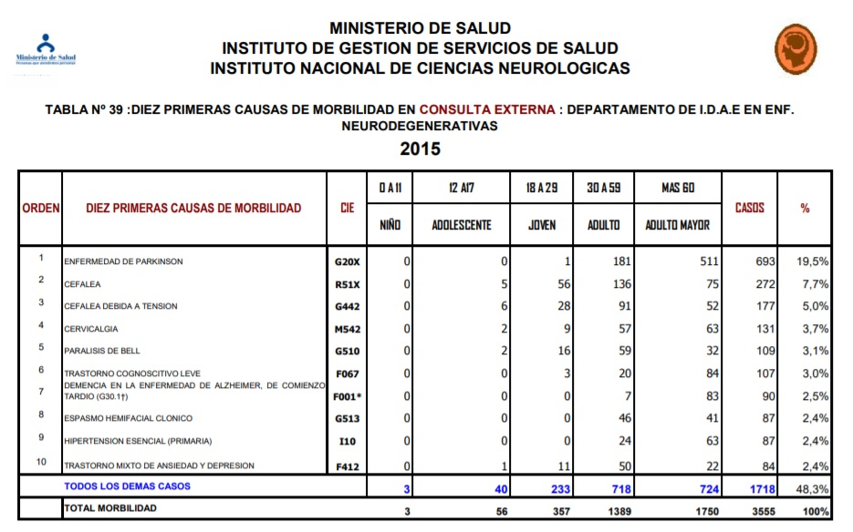
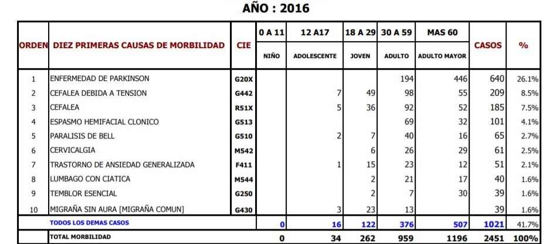
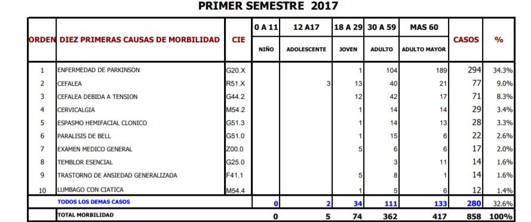
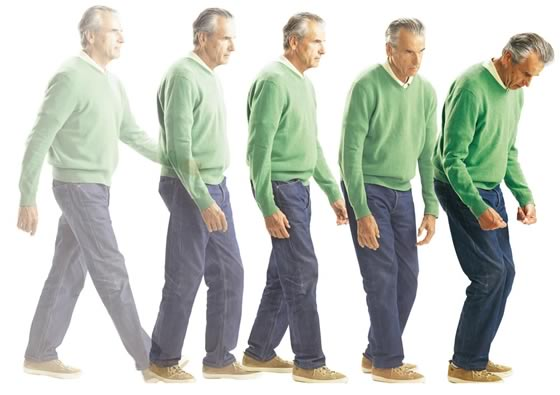
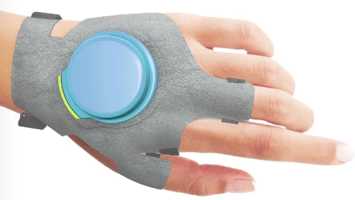
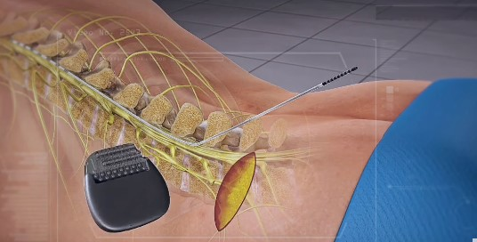
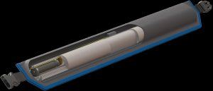
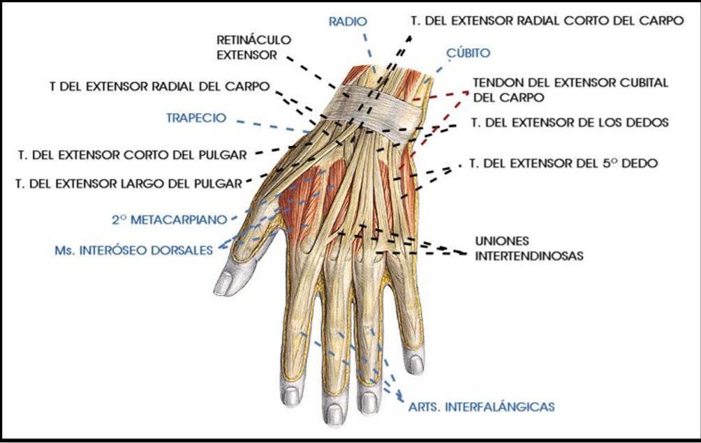
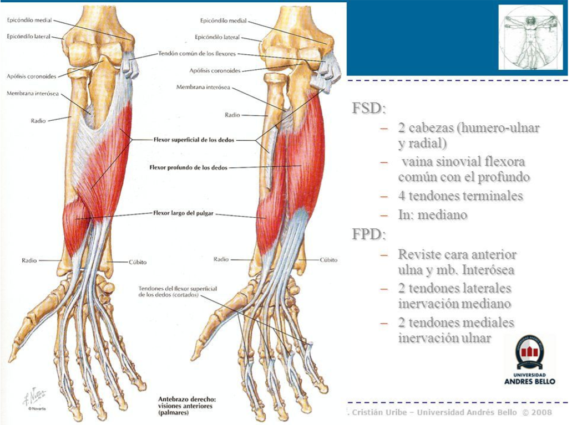

El parkinson es una enfermedad producida por un proceso neurodegenerativo multisistémico que afecta al sistema nervioso central lo que provoca la aparición de síntomas motores y no motores.

Es crónica y afecta de diferente manera a cada persona que la padece, la evolución puede ser muy lenta en algunos pacientes y en otros puede evolucionar más rápidamente. No es una enfermedad fatal, el afectado no va a fallecer a causa del parkinson.

Diseño de un dispositivo robótico supresor de temblores en la mano en personas con Parkinson.

Ayudar a las personas con Parkinson para que puedan realizar sus labores cotidianas normalmente.

Mejorar la calidad de vida de los padecientes de parkinson y parkinsonismos con nuestro invento.

Crear un dispositivo biomecánico efectivo en la supresión de los temblores.
Semana a semana iremos añadiendo información de nuestra investigación y desarrollo.
Cuadros estadísticos del MINSA
  El Parkinson es una enfermedad neurodegenerativa que afecta en su mayoría a personas de más de 60 años; sin embargo, puede aparecer antes. Esta enfermedad afecta a una de cada 100 personas mayores de 60 años. Actualmente, hay unas 6.3 millones con esta enfermedad en el mundo y la OMS prevé que para el 2030 llegarán a ser más de 12 millones (Organización Mundial de la Salud, 2016).
En el Perú, el Instituto Nacional de Ciencias Neurológicas, en un estudio estadístico del primer semestre del 2017, ubicó en el puesto número 4 a la enfermedad de Parkinson entre las diez primeras causas de morbilidad general en consulta externa. Lo más preocupante es que está enfermedad afecta en su mayoría a adultos (30-59), 80 casos, y adultos mayores (>60), 170 casos. Según Carlos Cosentino, jefe del departamento de enfermedades neurodegenerativas del Instituto Nacional de Ciencias Neurológicas, en Lima existirían alrededor de 10 000 personas con Parkinson en el 2017.
Es una enfermedad que solo puede ser tratada en niveles de atención de salud I y II. Estos se encuentran la mayoría en las ciudades principales de las provincias. Aunque, en la capital se hallan la mayor cantidad de ellos. Para los pacientes con seguro Essalud, según la misma página web: “solo en el Hospital Rebaggliati se ofrece un tratamiento integral (…) incluye terapias de rehabilitación, consejos nutricionales, apoyo psicológico, tratamiento con medicamentos y en última instancia la cirugía por estimulación cerebral profunda para casos complicados y muy severos de la enfermedad.”(Essalud, 2014). El costo de este seguro varía entre 65 y 215 soles mensuales.
Una persona con Parkinson presenta grandes dificultades para realizar sus tareas diarias como: comer, vestirse, bañarse, caminar o coger objetos, realizar estas actividades depende del estadio en el que se encuentre.
Los pacientes con párkinson necesitan de la ayuda psicológica; ya que la depresión y la ansiedad están fuertemente ligados a las consecuencias de la disminución de la dopamina. Esto se ve reflejado en movimientos más lentos no acore al estadio de la enfermedad, problemas en el sueño y falta de apetito. Por eso, es necesario el apoyo de la familia y amigos desde el momento del diagnóstico y fomentar las actividades sociales del paciente. Dado que suelen aislarse de su entorno por miedo al que dirán, incomodidad al ser observados, molestia al no poder caminar bien, vergüenza de los temblores, etc. Los grupos de ayuda y el deporte son actividades que ayudan a la mejora de la condición física y mental.
Un estudio realizado por más de dos décadas por Peter Nordstrom, de la Universidad de Umea, en Suecia afirma que existe un vínculo entre la depresión y la enfermedad de Parkinson, por lo que la depresión puede ser un síntoma precoz de la enfermedad de Parkinson.Este estudio afirma que las personas con depresión fueron 3,2 veces más propensas a desarrollar la enfermedad de Parkinson dentro de un año después del inicio del estudio que las personas que no tenían depresión, entre 15 y 25 años después los pacientes con depresión presentaban un 50 por ciento más de probabilidad. También afirma que las personas hospitalizadas por depresión tenían un 3,5 veces más de posibilidades de desarrollar el Parkinson.
La depresión y el impacto social en los enfermos con parkinson
La frecuencia de la depresión en la EP duplica a la de una población sana (31% contra 16%, respectivamente). No existe una correlación entre la depresión y la gravedad del EP puesto que la depresión puede anteceder a la E; alrededor del 30%de los pacientes con EP y depresión tienen un componente de ansiedad. Muestran apatía y la ausencia de placer(Anedonia) como también la presencia de demencia es de 5 veces más frecuente a comparación de una persona sana. El enfermo experimenta una disminución de su autoestima al sentir que ya no tiene el control sobre la vida que estaba llevando. Los cuadros depresivos pueden emerger. Además, la limitación y pérdida de control de movimientos acaba impidiendo antes o después cualquier actividad laboral entre los que trabajan, o seguir con las costumbres habituales entre los jubilados, que son la gran mayoría. Desde estadios tempranos, encuentran dificultades para salir de casa, por lo que tienden a recluirse pronto en ésta, lo cual supone una pérdida importante del contacto social. Esta pérdida de relaciones sociales es a la vez causa y efecto del malestar psicológico que sienten estas personas. (Martignoni et al., 2011). Experimentan por tanto la enfermedad como algo que les limita y que les ata, y también como una fuente de inseguridad y ansiedad. Al inicio es muy frecuente que los pacientes no acepten su enfermedad ya que esta suponga cambios en su vida como también gastos extras para la familia. La inseguridad que sientes debida a su enfermedad hace que disminuyan sus relaciones sociales lo deriva al aislamiento tanto de sus familiares, amigos y conocidos, debido a esta inseguridad. Tienen miedo a tener delante de la gente los bloqueos o discinesias propias del Parkinson como también se sienten incomodos cuando otras personas les ven padeciendo estos síntomas. Por otra parte, dado que los costes económicos van en aumento a medida que la enfermedad progresa, es muy importante que se evalúe el uso de terapias avanzadas, la principal repercusión social para el enfermo es que la enfermedad le hace dependiente de un cuidador. Necesitará ayuda, tanto mayor cuanto más avance la enfermedad, para realizar hasta las tareas más básicas y cotidianas, como son: levantarse y acostarse, sentarse e incorporarse en un sofá, vestirse o desvestirse, realizar su aseo personal, incluso hacer sus necesidades, comer, mover o cargar con objetos, desplazarse por la propia casa, o mucho más fuera de ésta, etc. (Dávila et al., 2008). En conclusión, la EP, como segunda enfermedad neurodegenerativa más frecuente genera un gran gasto sociosanitario en la población. La severidad de la enfermedad, el grado de discapacidad ocasionado tanto por síntomas motores como no motores contribuyen notablemente al incremento de los costes, tanto directos como indirectos.
El mayor gasto se genera en pacientes diagnosticados en edad adulta a partir de los 30 años y antes de los 60 años; ya que por el avance de la enfermedad su calidad de vida va a ser afectada más rápidamente. En algunos casos, el deterioro neurológico les impedirá trabajar, habrá la necesidad de adecuar la carga laboral, realizar una jubilación adelantada o inclusive cambiarse de trabajo. Según la Asociación Mexicana de Parkinson (AMPAC, 2017) solo en el tratamiento con especialistas tales como citas médicas, psicólogos, enfermeros personales; se invierte de 84 mil hasta 100 mil pesos anuales. (aproximadamente, 14500 a 17500 soles anuales). Es decir, una persona con sueldo un mínimo en el Perú no podría subvencionar el costo de esta enfermedad. En el caso del estadio 5, esta cifra aumenta considerablemente porque el paciente es incapaz de moverse por sí solo. Se pierde la posibilidad de andar; pasando la mayor parte del tiempo postrado en una cama o sentado en la silla de ruedas. Aunque solo el 15% de los diagnosticados llegan a esta etapa. (Asociación Parkinson Madrid).
El precio de las pastillas, con las que se tratan a las personas con Parkinson, que se muestra es referencial, algunas de estas pastillas se encuentran en genérico y otras no; por lo que el precio puede variar.
Precios del Observatorio de productos farmacéuticos.
Tomando en cuenta las dosis y estos precios, se invierte un aproximado de 10 soles diarios en pastillas.
El Parkinson
Fases del Parkinson
Teletremor
GyroGlove
Liftware
Emma Watch
Electroestimulación de la médula
ActiveProtective
La enfermedad de Parkinson (EP) es un trastorno neurodegenerativo que afecta al sistema nervioso de manera crónica y progresiva. Es la segunda enfermedad más prevalente en la actualidad después del Alzhéimer y pertenece a los llamados Trastornos del Movimiento.
Se conoce comúnmente como enfermedad de Parkinson en referencia a James Parkinson, el doctor que la describió por primera vez en 1817 en su monografía Un ensayo sobre la parálisis agitante (An essay on the shaking palsy).
La EP se caracteriza por la pérdida (o degeneración) de neuronas en la sustancia negra, una estructura situada en la parte media del cerebro. Esta pérdida provoca una falta de dopamina en el organismo, una sustancia que transmite información necesaria para que realicemos movimientos con normalidad. La falta de dopamina hace que el control del movimiento se vea alterado, dando lugar a los síntomas motores típicos como el temblor en reposo o la rigidez. (VIU, 2018)
Fases del Parkinson
En la enfermedad de Parkinson se pueden distinguir 5 fases en las que los síntomas se van agravando poco a poco a lo largo del tiempo. Las 5 fases del Parkinson son las siguientes:
(Federación Española de Párkinson, 2018)
La frecuencia de temblor de una persona con Parkinson oscila entre 3 y 7 Hz y se expresa como un movimiento de los dedos que “cuenta monedas”, pronación-supinación del antebrazo o flexión-extensión en la articulación del codo. Su topografía más frecuente es en manos, brazos, cabeza, tronco, mandíbula, labios y lengua.Su amplitud es mayor en aquellos que presentan temblor postural y se incrementa con estrés o ansiedad y disminuye con movimientos voluntarios.(Ojeda, 2009)
La Enfermedad de Parkinson es difícil de diagnosticar porque no hay una prueba específica para la condición. Los síntomas de la Enfermedad de Parkinson varían de persona a persona y una serie de otras enfermedades presentan síntomas similares. Por estas razones algunas veces se hacen diagnósticos incorrectos.
Por ello el médico capacitado en trastornos del sistema nervioso (neurólogo) evaluará si el paciente sufre de esta enfermedad, conforme a su historia clínica, un análisis profundo de los síntomas, y además de una exploración física y neurológica. (Parkinson's fundation, 2018)
Síntomas de la Enfermedad del Parkinson:
Se clasifican en dos : síntomas premotores (o no motores) , los cuales aparecen años antes que los síntomas motores, y los síntomas motores.
Síntomas premotores:
Los más conocidos son: depresión, reducción del olfato, estreñimiento y trastorno de conducta del sueño REM (ensoñaciones muy vívidas).
Síntomas motores:
Es muy importante establecer lo que se conoce como “diagnóstico diferencial” es decir, que se determine si se padece Parkinson o por el contrario otras dolencias que pueden cursar con parkinsonismo. Sin duda, el diagnóstico definitivo de la enfermedad de Parkinson se verá apoyado por la buena respuesta del paciente a la medicación antiparkinsoniana junto con su evolución esperable del cuadro clínico a lo largo de los años. (Mayo Clinic, 2018)
Los neurólogos disponen de una amplia gama de fármacos que mejoran sustancialmente la calidad de vida de estos pacientes siendo el más utilizado la Carbidopa Levodopa. En algunos casos avanzados, se puede recomendar una cirugía.
El médico también puede recomendar cambios en el estilo de vida, en especial del ejercicio aeróbico continuo.
Medicamentos:
Los medicamentos pueden ayudar a controlar los problemas con el andar, el movimiento y los temblores. Estos medicamentos aumentan o sustituyen la dopamina, una sustancia química de señalización específica (neurotransmisor) del cerebro.
Los medicamentos que el médico puede recetar son los siguientes:
(Parkinson's fundation, 2018)
Procedimientos quirúrgicos:
Estimulación cerebral profunda. aquí,los cirujanos implantan electrodos en una parte específica del cerebro. Los electrodos están conectados a un generador implantado en el pecho cerca de la clavícula que envía impulsos eléctricos al cerebro y puede reducir los síntomas de la enfermedad de Parkinson. La estimulación cerebral profunda suele ofrecerse con más frecuencia a las personas con estado avanzado de la enfermedad de Parkinson(más del estadio 4) que tienen respuestas inestables a los medicamentos como la Levodopa.
La estimulación cerebral profunda suele ofrecerse con más frecuencia a las personas con estado avanzado de la enfermedad de Parkinson que tienen respuestas inestables a los medicamentos (levodopa) Si bien la estimulación cerebral profunda puede brindar un beneficio sostenido para los síntomas de la enfermedad de Parkinson, no evita que esta enfermedad siga avanzando. (Guridi, 2004)
Cuadro comparativo sobre las actuales alternativas biomédicas en el mercado y en desarrollo para el Parkinson.
VIU. "Fases del Parkinson: ¿Cuáles son y qué tratamientos hay para cada fase?". 2018. Retrieved from https://www.universidadviu.es/fases-del-parkinson-cuales-tratamientos-fase/
Federación Española de Párkinson. 2018. Retrieved from http://www.esparkinson.es/
Ojeda López, M., Rodríguez Weber, F., & Amaya Sánchez, L. "Diagnóstico diferencial del temblor". 2009. Retrieved from http://www.medigraphic.com/pdfs/actmed/am-2009/am093b.pdf
Mayo Clinic. Enfermedad de Parkinson - Diagnóstico y tratamiento. 2018. Retrieved from https://www.mayoclinic.org/es-es/diseases-conditions/parkinsons-disease/diagnosis-treatment/drc-20376062
Parkinson's Fundation. Diagnóstico y Tratamiento. 2018. Retrieved from http://parkinson.org/espanol/diagnostico
Guridi, J., Rodríguez-Oroz, M., & Manrique, M. 2004. Tratamiento quirúrgico de la enfermedad de Parkinson. Neurocirugía, 15(1), 5-16. doi: 10.1016/s1130-1473(04)70498-4
URI. TeleTremor. 2018. TeleTremor. Retrieved from https://web.uri.edu/ecbe/smart-wristband-takes-on-parkinsons/teletremor/
Gyrogear. 2018. Retrieved from https://gyrogear.co/gyroglove
Verily. Liftware - Eat with confidence. 2018. Retrieved from https://www.liftware.com/
Microsoft. Project Emma - Microsoft Research. 2018. Retrieved from https://www.microsoft.com/en-us/research/project/project-emma/
Plan de trabajo detallado

Giroscopios
Electroestimulación
Vibraciones
Sensores
La función de los tendones como base para nuestra solución
Los tendones son un tejido conectivo fibroso se encargan de unir a los músculos con los huesos, los cuales se encuentran en las terminaciones de los músculos. Sin embargo cumplen otra función (que es en la cual nos centraremos):Mover los huesos junto con los músculos. Ya que la enfermedad del parkinson causa que la persona la cual esté afectada tenga movimientos involuntarios lo que deseamos es crear una ortesis que cubra la mano y el antebrazo,que cumplira la funcion de ser un soporte para dichas partes del cuerpo,pero adicionando un mecani smo que simule la función del sistema locomotor por medio de elásticos en forma de ligas que estarán ubicados por sobre la ubicación de los tendones de extensión para así tener una simulación aún más eficiente.
Funcionamiento:
Una vez que la persona afectada tenga los movimientos involuntarios , un sensor detectará la frecuencia de dichos movimientos (6-7 Hz).Debido a ello se ejecutará una función semejante a la extensión de los músculos que van desde la mano hasta el antebrazo(la cual se realizará con una cantidad de fuerza lo suficiente como para limitar el movimiento involuntario),impidiendo el movimiento (específicamente en la muñeca y los dedos) en gran medida.
Si la persona desea hacer actividades cotidianas como escribir, lavar platos o comer, deberá hacer un movimiento de flexión algo mayor al movimiento por extensión simulado por la ortesis. Debido a estos movimientos opuestos, se podrá estabilizar de manera considerable los temblores de la mano, permitiendo así la ejecución de manera más efectiva de las acciones anteriormente dichas.
Debido a que la enfermedad del parkinson no causa un déficit de fuerza en los afectados, no será un problema ejercer la fuerza contraria para realizar los movimientos
Posibles complicaciones:
Debido a que la cantidad de fuerza necesaria aumenta mientras más fino sea el movimiento, se puede causar un cansancio en los músculos del antebrazo y la mano.
 Somos estudiantes de la carrera de Ingeniería Biomédica de la Pontificia Universidad Católica del Perú y la Universidad Peruana Cayetano Heredia. Estamos realizando este proyecto como parte del desafío del curso Taller de Proyectos 1 para el ciclo 2018-2.
Lo único imposible es aquello que no intentas.